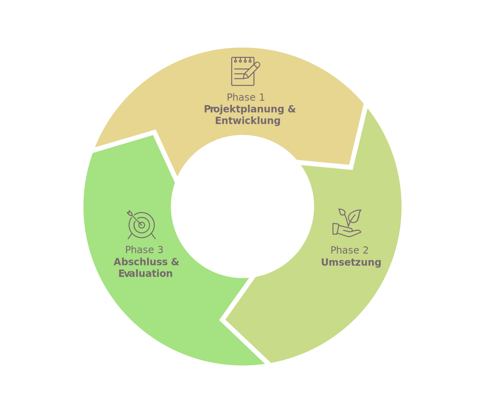

Klappe auf, Affe raus!? Ganz so einfach ist es leider nicht…
Zunächst müssen die Orang-Utans die Freiheit „üben“ - auf künstlich angelegten oder natürlichen Flussinseln, nahe oder innerhalb der BOS Rettungsstationen. Nachdem sie jahrelang auf ein Leben in der Wildnis vorbereitet wurden, überlassen wir sie dort erstmals sich selbst. Während dieser Pre-Release-Phase werden die Tiere regelmässig überwacht, aber nur noch zweimal täglich zugefüttert. Erst wenn Sie sich auf den Übungsinseln bewährt haben, können sie guten Gewissens in die Freiheit entlassen werden.
Für die eigentliche Auswilderung, das Release, muss in der Zwischenzeit ein geeignetes Gebiet gefunden werden, dessen Schutz langfristig gewährleistet ist. Das ist alles andere als einfach. Verhandlung über Nutzungsrechte mit Behörden oder der ansässigen Bevölkerung ziehen sich oft über Jahre hin. Lange war der Mangel an sicheren Waldgebieten der Grund dafür, dass die BOS Stiftung (BOSF) nicht auswildern konnte. Erst 2010 konnte über ein eigens dafür gegründetes Privatunternehmen (PT. RHOI) eine Naturschutz-Konzession für ein Regenwaldgebiet in Ost-Kalimantan erworben werden. Das 860 km² große Waldgebiet mit dem Namen Kehje Sewen (KJ7) ist weitgehend unberührt und steht nun bis zu 90 Jahre lang der BOSF als Schutz- und Auswilderungsgebiet zur Verfügung. Darüber hinaus nutzt die BOSF bestehende Schutzgebiete in Zentral-Kalimantan für Auswilderungen: Bukit Batikap und den Nationalpark Bukit Baka Bukit Raya (BBBR NP). Vereinbarungen mit Konzessionshaltern wie z.B. Palmölkonzernen oder Holzfirmen werden ebenfalls getroffen. Auch sie stellen ungenutzte Areale für Pre-Release Aktivitäten oder Auswilderungen zur Verfügung.
Graphik: Von der Vorbereitung bis zur Auswilderung
Im Anschluss an die tatsächliche Auswilderung findet dann das so genannte Post-Release Monitoring statt. Implantate erlauben uns, die Orang-Utans in den ersten Wochen nach ihrer Auswilderung per Radio-Antenne zu orten und intensiv zu überwachen. Bis zu drei Jahre lang kann das BOSF Feldteam in enger Zusammenarbeit mit Wissenschaftlern und Orang-Utan Experten auf diesem Weg das Wohlergehen und das Verhalten der ausgewilderten Tiere kontrollieren und studieren.
{% include leaves.svg id="" %}
Freiheit üben: Pre-Release Aktivitäten
Für unsere Pre-Release Aktivitäten nutzen wir i.d.R. Flussinseln, die für regelmässige Kontrollen gut zugänglich sind (d.h. nahe oder innerhalb unserer Rettungsstationen liegen). Die Auswilderungskandidaten können über das Wasser nicht entkommen und dort einige Wochen vor ihrer Auswilderung die Freiheit üben. Den „Inselbewohnern" bieten wir so ein natürliches Umfeld, in dem sie sich im Nestbau üben oder selbständig nach wilden Früchten suchen können. Pfleger bringen nur noch zweimal am Tag zusätzliches Futter und überwachen die Auswilderungskandidaten. Durch das Zusammenleben mit anderen Orang-Utans auf der Insel lernen die Tiere ausserdem voneinander.
Im Falle unserer Rettungsstation in Samboja Lestari (in Ost-Kalimantan) mussten künstliche Pre-Release Inseln angelegt werden. Unsere zweite Rettungsstation in Nyaru Menteng unterhielt bereits vier kleine Pre-Release Inseln (die Platz für max. 90 Orang-Utans boten), als die BOSF im Februar/März 2015 eine weitere natürliche Flussinsel als Übungsgebiet dazugewinnen konnte. Das 655 ha grosse Gebiet auf der Insel „Salat Island“ ist nur eineinhalb Stunden mit dem Auto von der Rettungsstation in Nyaru Menteng entfernt und vom nächsten Dorf aus per Boot innerhalb von 30 Minuten erreichbar. Auch die Vegetation der Insel ist viel versprechend: 19 der 26 ansässigen Pflanzenarten gehören zum festen Speiseplan der Orang-Utans.
Mittlerweile ist es gelungen, die letzten bürokratischen Hürden vor Ort aus dem Weg zu räumen. Ausserdem konnte das Übungsgebiet im Oktober 2016 durch eine Zuwendung der RSPO zertifizierten Firma PT. Sawit Sumbermas Sarana (SSMS) um eine riesige Fläche erweitert werden. Der BOS Stiftung stehen dort nunmehr 2,089 ha für Pre-Release Aktivitäten zur Verfügung – eine Fläche, die zeitgleich bis zu 200 Orang-Utans einen ersten Vorgeschmack auf die Freiheit geben kann. Auch eine Gruppe kranker und körperlich beeinträchtigter Orang-Utans, die nicht mehr ausgewildert werden können, findet auf Salat Island eine neue Heimat.
Innerhalb von nur wenigen Wochen wurden Ende 2016 vier Fütterungsplattformen und zwei Anlegestege errichtet, ein kleines Büro im Dorf Pilang aufgebaut und drei Motorboote für den Transport der Tiere erworben. Auch eine schwimmende Ranger Station wurde gebaut, die per Boot dorthin bewegt werden kann, wo sie tatsächlich benötigt wird. Anfang November 2016 konnten die ersten 12 Orang-Utans (7 Weibchen und 5 Männchen) nach Salat Island umziehen. Sie werden permanent von BOS Mitarbeitenden überwacht und es geht ihnen soweit sehr gut. Bis August 2017 plant die BOS Stiftung u.a. den Bau zusätzlicher Fütterungsplattformen, den Ausbau der Kanäle und den Erwerb eines Geländewagens und weiterer Boote. In naher Zukunft werden wir also mit Sicherheit den Transfer vieler Orang-Utans nach Salat Island beobachten dürfen, die gründlich auf diesen Moment vorbereitet wurden und lange darauf gewartet haben!
Nicht nur die Orang-Utans müssen für die Auswilderung parat sein. Es braucht auch passende Waldgebiete - kein einfaches Unterfangen, denn nicht jeder Regenwald ist für Orang-Utan Auswilderungen geeignet. Zunächst schätzt ein BOS Expertenteam die Qualität und Aufnahmekapazität eines potentiellen Auswilderungsgebietes ab. Mittels Satellitenbildern und Konzessionskarten wird nach Habitattypen, Waldanteilen, Baumbestand, Höhenlagen (Orang-Utans leben kaum oberhalb von 900 Meter Höhe), Landnutzungsarten, Besitzverhältnissen und Infrastruktur kartiert. Für die Auswilderung von Orang-Utans müssen folgende Mindestanforderungen erfüllt sein: Das Gebiet muss gross genug und langfristig geschützt sein, es darf keine größere Orang-Utan-Population vorhanden sein, der Wald muss im ursprünglichen Verbreitungsgebiet der jeweiligen Unterart liegen und es muss genügend Nahrung (d.h. vor allem Flügelfruchtbäume) geben.
Bild?
In einem nächsten Schritt müssen die Besitzverhältnisse geklärt werden. Die BOSF tritt mit den Konzessionshaltern (d.h. mit Holzfirmen, Palmölkonzernen oder der lokalen Bevölkerung) in Verhandlungen oder nimmt Kontakt mit staatlichen Behörden auf, um in bestehende Schutzgebiete auszuwildern oder eigene Schutzkonzessionen zu erwerben. Allen politischen Ebenen (von der Zentral- bis zur Bezirks-Regierung) muss das Projekt nahe gebracht werden und die erforderlichen Genehmigungen eingeholt werden.
Unverzichtbar ist auch die rechtzeitige Aufklärung lokaler Vertreter, denn ohne die Zustimmung der Menschen vor Ort wären Auswilderungen zum Scheitern verurteilt. Die BOSF klärt vorab, wo Interessenskonflikte entstehen könnten. Ausserdem unterstützen wir die ansässigen Dorfgemeinschaften dabei, nachhaltige und umweltverträgliche Einkommensquellen zu schaffen, sowie Gesundheits- und Bildungsprojekte, Umwelt- oder Naturschutzvorhaben umzusetzen. So entstehen Partnerschaften, die den langfristigen und nachhaltigen Erfolg der Auswilderungen sichern.
Bild?
Sind die Auswilderungsgebiete identifiziert und gesichert, muss dort die nötige Infrastruktur aufgebaut werden. Dazu gehören ein kleines Büro in der nächstgrößeren Stadt, eine Forschungs- und Basisstation, Zugangswege, der Kauf oder das Anmieten von Fahrzeugen, sowie die Anschaffung und Installation von Kommunikationseinrichtungen. Außerdem muss für alle anfallenden Tätigkeiten qualifiziertes Personal eingestellt und teilweise ausbildet werden.
Unterstützen Sie uns bei diesen Vorbereitungen für die Auswilderungen, spenden Sie für unsere Pre-Release Aktivitäten oder werden Sie anderweitig aktiv!
{% include svg_icon.html name="donate" %} spende jetzt {% include svg_icon.html name="aktiv" %} werde aktiv
{% include leaves.svg id="" %}
Auswilderungen
Wenn sich die Orang-Utans auf den Pre-Release Inseln bewährt haben, gesund sind und Auswilderungsgebiete zur Verfügung stehen, kann die eigentliche Auswilderung in die Wege geleitet werden. Diese orientiert sich an den Richtlinien der International Union for Conservation of Nature and Natural Resources (IUCN) und erfolgt unter strenger veterinärmedizinischer Kontrolle. Die Orang-Utans werden betäubt und von der Station mit einem Fahrzeug, per Boot und/oder Helikopter in die entlegenen Auswilderungsgebiete gebracht. Oberstes Gebot ist, den Stress für die Orang-Utans so gering wie möglich zu halten und zu verhindern, dass sich die Tiere verletzen oder gar krank werden. Bei den Auswilderungen arbeiten BOSF Mitarbeiter, Tierärzte, Primatologen und Biologen eng miteinander zusammen. Sie bestimmen auch, wie die Gruppe der Auswilderungskandidaten zusammengesetzt sein wird, d.h. wie viele Tiere und wer mit wem ausgewildert werden kann.
Graphik: Karte where we are active
Unsere Rettungsstation in Samboja Lestari (Ost-Kalimantan) nutzt den Kejeh Sewen Forest (KJ7) als Auswilderungsgebiet. Der BOS Rettungsstation in Nyaru Menteng (Zentral-Kalimantan) stehen zwei Schutzgebiete für Auswilderungen zur Verfügung: Bukit Batikap und der BBBR Nationalpark. Seit dem Neustart der Auswilderungen im Jahr 2012 haben knapp 250 Orang-Utans in diesen drei Auswilderungsgebieten eine neue Heimat gefunden.
Bild?
Die Kosten einer einzigen Auswilderung beziffert die BOSF mit ca. 10.000 CHF. Dieser Betrag beinhaltet die medizinische Vorbereitung der Orang-Utans auf die Auswilderung (u.a. Gesundheitschecks und das Einsetzen von Implantaten für die spätere Überwachung), die Versorgung der Tiere mit Nahrungsmitteln während des oft tagelangen Transportes, die Verpflegungs- und Übernachtungskosten sowie die Gehälter der involvierten Tierärzte, Pfleger und Träger, die notwendigen Medikamente (u.a. Betäubungsmittel und Notfallausrüstung), den Transport per Auto oder LKW, Flugzeug, Helikopter und/oder Boot etc. Wenn Sie dieses sehr kostspielige Unterfangen unterstützen möchten, spenden Sie jetzt oder abonnieren Sie unsere Printmedien. Wir halten Sie gerne über die aktuellen Vorhaben und Auswilderungskandidaten auf dem Laufenden!
{% include leaves.svg id="" %}
Freiheit überwachen: Post-Release Monitoring
Vor allem in den ersten sechs Wochen nach der Freilassung, mindestens ein Jahr lang und maximal für zwei bis drei Jahre überwachen wir die ausgewilderten Orang-Utans. Aktuell setzen wir dafür Radiotechnologie ein. Jedem Tier wird ein Transmitter in die Nackenfalte implantiert, welcher ein Signal aussendet. Das Signal wird von einem Empfänger entgegen genommen und per Antenne vom BOSF-Feldteam lokalisiert. Über Wochen verfolgt das Team die ausgewilderten Orang-Utans und erhebt dabei Daten, die Rückschlüsse auf ihr Wohlergehen zulassen: Wieviel Zeit verbringt das Tier schlafend oder essend? Welche Nahrung nimmt es wann zu sich? Wieviel Strecke legt es zurück, interagiert es sozial und wie ist sein/ihr Reproduktionsverhalten?
Aus diesen Informationen können die BOSF Mitarbeiter und die Wissenschaftler, die den Auswilderungsprozess begleiten, ablesen, welchen Einfluss die Auswilderungen auf das Ökosystem haben. Zudem können sie feststellen, ob ein Tier in der Lage ist, sich in der freien Wildbahn selbständig zu ernähren, ob das Nahrungsangebot ausreicht, ob das Tier zu- oder abnimmt, gesund oder krank ist. Ist Letzteres der Fall, müssten Tiere gegebenenfalls zurückgeholt und medizinisch behandelt werden. Kristallisiert sich hingegen ein permanenter Aufenthaltsort heraus, ist das gerade bei Weibchen ein gutes Zeichen: Sie scheinen ihr neues Zuhause akzeptiert zu haben.
Bild:
Die so gewonnenen Erkenntnisse werden für zukünftige Auswilderungen genutzt und wenn nötig Strategien angepasst. Ausserdem gilt: Nur wenn wir wissen, welche Tiere die besten Überlebenschancen haben, können wir unsere Vorbereitung auf die Auswilderungen (d.h. die Pre-Release Aktivitäten) entsprechend optimieren. Zu guter Letzt kontrollieren wir nicht nur das Wohlbefinden der ausgewilderten Tiere, sondern auch die Auswilderungsgebiete selbst. Gefahren wie z.B. illegaler Holzeinschlag oder Wilderei werden so eher entdeckt. Auch die abschreckende Wirkung dieser Überwachungstätigkeit sollte nicht unterschätzt werden.
Unser Post-Release Monitoring deckt aktuell riesige Auswilderungsgebiete an allen drei Standorten ab: in Bukti Batikap und im BBBR National Park (Zentral-Kalimantan) sowie in Kejeh Sewen (Ost-Kalimantan). Die Signale der Sender haben eine Reichweite von 400 Metern bis 5 Kilometern – je nachdem wie stark bewaldet und hügelig das Land ist. Mit den personellen und technischen Ressourcen, die uns zur Verfügung stehen, schaffen wir es gerade, knapp 250 ausgewilderte Orang-Utans zu überwachen (Stand Ende 2016).
Bild:
Unser Post-Release Monitoring ist ein sehr beschwerlicher und personalintensiver Prozess. Über Monate und bei jedem Wetter folgen unsere Teams den Orang-Utans durch den dichten Regenwald. Insgesamt beschäftigt die BOSF dafür 40 Monitoring Agents. Hinzu kommen Voluntäre, Koordinatoren und unterstützendes Personal wie z.B. Köche. Nebst den Kosten für die technischen Geräte (Implantat/Sender, Empfänger und Antennen) fallen auf Grund der extremen Wetterbedingungen vor Ort erhebliche Kosten für deren Unterhalt an. Oft lassen sich notwendige Reparaturen nur im Ausland (beim Hersteller, u.a. in den USA) durchführen, was nicht nur teuer sondern auch mit langen Wartezeiten verbunden ist.
mehr erfahren
Gesundheitsprojekte
Das Wohlbefinden und die körperliche Unversehrtheit der Orang-Utans und der lokalen Bevölkerung sind aufs Engste miteinander verbunden. Geht es den Orang-Utans gut, geht es in der Regel auch den Menschen gut und umgekehrt.
Das gilt insbesondere für die verheerenden Waldbrände, die jedes Jahr aufs Neue nicht nur das Überleben der roten Waldmenschen gefährden, sondern auch die menschliche Gesundheit der ganzen Region bedrohen. Laut einer Studie der US-Universitäten Harvard
und Columbia starben rund 100‘000 Menschen an den Folgen der Waldbrände von 2015. Hundertausende leiden jährlich in den vom Smog betroffenen Ländern Indonesien, Malaysia und Singapur an Atemwegserkrankungen. Auch Fehlgeburten werden mit den alljährlichen
Torf- und Waldbränden in Verbindung gebracht.
Zudem betreffen viele Krankheiten, die in der Region verbreitet sind (z.B. Malaria), Menschen wie Tiere. Hepatitis, Tuberkulose, Herpesviren oder verschiedene Parasiten (v.a. im Magen und Darm) werden aufgrund der engen genetischen Verwandtschaft
zwischen Menschen und Orang-Utans übertragen.
Wir leisten deshalb Aufklärungsarbeit, unterstützen den Aufbau von kleinen lokalen Gesundheitszentren und kümmern uns um eine bessere Ausstattung mit medizinischem Gerät und Medikamenten. Projekte im Bereich Umwelterziehung (die Einführung von Müllentsorgung
und -trennung oder eine Verbesserung der Frischwasserversorgung) zielen ebenfalls auf eine gesunde lokale Bevölkerung ab. Diese Massnahmen sind vor allem deshalb wichtig, weil die lokale Bevölkerung nur begrenzten Zugang zu einer verlässlichen Gesundheitsversorgung
hat. Darunter leidet insbesondere die Versorgung von schwangeren Frauen, Neugeborenen und Kleinkindern.
Wenn Sie unsere Vorhaben im Gesundheitsbereich unterstützen möchten spenden Sie jetzt oder abonnieren Sie unsere Printmedien. Wir halten Sie gerne über unsere Projekte auf dem Laufenden!
{% include leaves.svg id="" %}
Bildungsprojekte
Unsere Bildungsprojekte können zwei Kategorien zugeteilt werden: 1.) Massnahmen in den Bereichen Umwelt-, Natur- und Artenschutz (z.B. Workshops zur Sensibilisierung der lokalen Bevölkerung für die ökologische Bedeutung der Orang-Utans oder für eine
nachhaltige, ökonomische Nutzung des Regenwaldes) und 2.) Weiterbildungsprogramme zur Verbesserung der Einkommenssituation.
Unsere Aktivitäten im Bildungsbereich richten sich v.a. an benachteiligte Gruppen, wie z.B. Angehörige der Dayak Wehea (eine Ethnie, die um ihre rechtliche Anerkennung und Landrechte kämpft). Ausserdem fördern wir gezielt junge Menschen, die zunehmend
mit der Darstellung von materiellem Wohlstand in Kontakt kommt und als Reaktion darauf ihre eigene Kultur als rückständig betrachtet. Unsere Aktivitäten im Bereich Umweltbildung richten sich insbesondere an Menschen, die nahe oder in Orang-Utan-Verbreitungsgebieten
leben. Sie sollten am besten schon im Kindes- oder Jugendalter für die ökologische Bedeutung der Orang-Utans, deren Wiederansiedelung, den Arten-, Natur- und Umweltschutz sensibilisiert werden.
Bitte unterstützen Sie unsere Bildungsvorhaben mit einer Spende, starten Sie Ihr eigenes Fundraising und/oder Aufklärungsprojekt in ihrem privaten oder beruflichen Umfeld oder helfen Sie uns vor Ort als Voluntär/in.
{% include leaves.svg id="" %}
Zuverlässige Partner in Indonesien und der Schweiz
Unsere Projekte planen und implementieren wir gemeinsam mit der ansässigen Bevölkerung und mit regionalen Partnerorganisationen wie BOSF/RHOI oder LPMK. Inhalt und Zielsetzung der Vorhaben orientieren sich an den Bedürfnissen der Menschen, die zunächst
gemeinsam ermittelt werden. Auch den Projektkontext, den Umfang der Aktivitäten und die beteiligten Gruppen identifizieren die BOSF und die Dorfgemeinschaften zusammen. Im Anschluss an diese erste Planungs- und Entwicklungsphase erfolgt eine Finanzierungsanfrage
an BOS Schweiz, inklusive einer Darstellung der Problematik und Ziele, des Projektdesigns, eines Zeitplans und Budgets. Sobald BOS Schweiz die finanziellen Mittel eingeworben hat, unterzeichnen die Projektpartner ein Memorandum of Understanding
(MoU), das die Kooperation formal regelt. Vor Ort wird das Projekt dann durch die BOSF und die Dorfgemeinschaften umgesetzt, ggf. unter Beteiligung anderer Fachorganisationen vor Ort. Während der Implementierungsphase kontrolliert BOS Schweiz den
Projektfortschritt auf Basis regelmässiger Berichterstattung und Projektbesuche, leistet fachliche Unterstützung, verwaltet die Mittel und berichtet an den/die Geldgeber und die Öffentlichkeit (PR). Zwischenanalysen können jederzeit zu einer Anpassung
der Projektaktivitäten führen, die am Ende sowohl intern (durch die BOSF und BOS Schweiz) als auch extern evaluiert werden. Mit dem Abschlussbericht an den/die Geldgeber und gegebenenfalls dem Aufgleisen eines Folgeprojektes schliesst sich der Kreis.
Projektzyklus

Legende
Projektplanung & Entwicklung
Definition der Bedürfnisse, Ziele, Aktivitäten, beteiligten Gruppen etc., Finanzierungsanfrage an BOS Schweiz; Einwerben der Mittel durch BOS Schweiz; Unterzeichnung MoU
Implementierung
Umsetzung der Aktivitäten & Berichterstattung durch BOSF & Dorfgemeinschaften; Kontrolle, fachliche Unterstützung, Verwaltung der Mittel, Berichterstattung an den/die Geldgeber und PR durch BOS Schweiz; Zwischenanalysen & ggf. Anpassungen
Abschluss & Evaluation
Projektabschluss & Evaluation durch BOSF; Endevaluation und Endbericht an Geldgeber durch BOS Schweiz; externe Evaluation; ggf. Aufgleisen eines Folgeprojektes
Vor Ort und in der Schweiz arbeiten wir eng mit Partnern zusammen, die über jahrelange Erfahrung und Expertise in der Entwicklungszusammenarbeit in Indonesien verfügen. BOS Mitarbeiter werden vor Ort geschult und haben – genau wie wir von BOS Schweiz
– über die Jahre wichtige Kompetenzen in den Bereichen Projektplanung, Umsetzung und Evaluation erworben. In der BOS Schweiz Geschäftsstelle in Zürich ist Dr. Elisabeth Labes (Leiterin für Internationale Projekte & Partner) Ihre Ansprechperson für
den Bereich Nachhaltige Entwicklungszusammenarbeit.
Die notwendigen Kapazitäten und personellen Ressourcen sind aufgebaut, etablierte Abläufe in der Projektabwicklung formalisiert und gemeinsame Lernprozesse längst zur Grundlage zukünftiger Vorhaben geworden. Einer Ausweitung unserer Entwicklungszusammenarbeit
steht somit nichts im Wege!
Zeitstrahl Entwicklung Com Dev Aktivitäten
Zentralkalimantan
Ostkalimantan
{% for year in site.data.dates %}
{{year.year}}
{% for event in year.events %}
{{event.location}}
{{event.event}}
{% endfor %} {% endfor %}
Unsere Entwicklungszusammenarbeit vor Ort finanzieren wir über Stiftungs- und Spendengelder. Über die Jahre haben wir nicht nur erhebliche Summen für Vorhaben in diesem Bereich eingeworben, sondern auch unseren vertrauenswürdigen Umgang mit den Mitteln
bewiesen. Bitte spenden auch Sie oder werden Sie anderweitig aktiv!
{% include leaves.svg id="" %}
Vertiefte Informationen
Wenn Sie auf dem Laufenden gehalten werden wollen über unsere Projektarbeit vor Ort, registrieren Sie sich hier mit Ihrer E-Mail Adresse. Sie bekommen dann unsere Orang-Utan News und Mailings zugestellt.


.jpg)